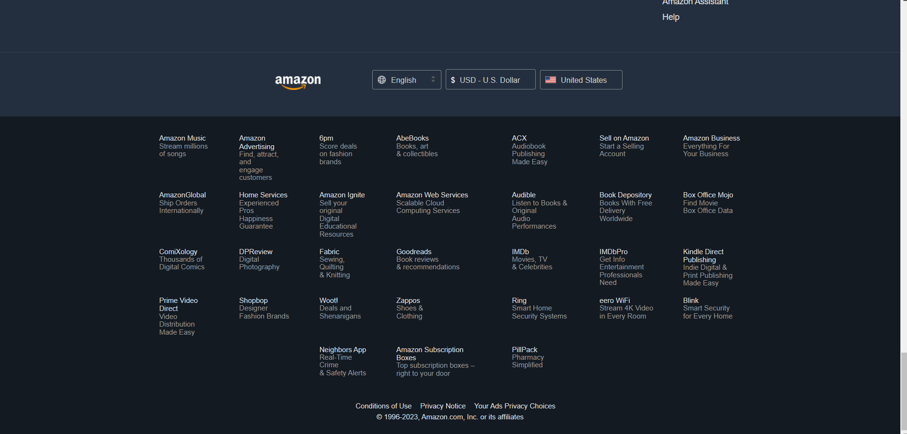

Camera Type |
Features |
|---|---|
| Point-and-Shoot | Compact, light, and easy to operate. Designed for casual photography and everyday moments. Perfect for newbies who don't want to deal with the complexities of manual settings. |
| DSLR | Most popular among professional photographers. Provides a variety of manual controls and interchangeable lenses for tailored photos. |
| Mirrorless | Provides the same image quality and manual settings as DSLRs, but smaller and lighter. Uses an electronic viewfinder to preview the image for a more realistic representation of the final image. |
| Action | Made to record fast-paced events and extreme sports. Great for outdoor trips because they are tiny, tough, and waterproof. Wide-angle lenses and built-in picture stabilization are common features. |
Our Website
Flipkart

By comparing these images, you can see the major differences between our website and Flipkart.
| Feature | Focal | Flipkart |
|---|---|---|
| Color theme | Light green,green,white| Blue,yellow,white,black |
|
| Automatic image slider | No | Yes |
| Manual image slider | No | Yes |
| Navigation bar | Home,Product,Research,Blog,About us | Logo,Search box,Login,Become seller,More,Cart |
| Image contain | Only of focal camera | Almost of every product |
| Category option on home page | No | Yes |
| User Experience | simple to use and navigate | simple to use and navigate |
By comparing these features, you can see the differences between our product and Flipkart.There are a number of variations between Focal and Flipkart that can be seen in terms of their features and designs.First we can see the diffrence in color.while Flipkart uses a combination of blue, yellow, white, and black where Focal uses light green, green, white, and black.We cann se automatic image slider in both website where coustumers can see various product.Flipkart, on the other hand, takes things a step further by offering consumers access to a manual picture slider, which gives them more control over the content that is displayed.Focal's navigation menu is simple and offers choices like Home, Product, Research, Blog, and About Us. Flipkart has a thorough navigation bar with a logo, search box, login, become a seller, more categories, and a cart.While focal focuses on there product in there webpage on the other side Flipkart display wide range opf products.Flipkart has organized its sections for simple browsing; Focal does not. Both websites prioritize the user experience by providing a simple and approachable user interface.
Comparing our website with others
By comparing these images, you can see the major differences between our website and Daraz.
Comparing Focal with Daraz
| Feature | Focal | Daraz |
|---|---|---|
| Color theme | Light green, green, white, black | Red, black, white |
| Product Range | Specializes in cameras | Offers a wide range of electronic products |
| Website Layout | Clean and focused on camera-related content | Diverse categories and product displays |
| Pricing | Competitive pricing for camera products | Varies depending on the product category |
| Customer Reviews | Specifically related to cameras and photography | Reviews cover a broader range of electronic products |
| Delivery Options | Only in Ktm city | Offers various shipping options and delivery speed |
The differences between our product and Draz by contrasting these qualities. Focal features a color scheme that is primarily composed of light green, green, white, and black and focuses on cameras. The website has a simple design and mostly focuses on camera-related content. Where Daraz has various option of products.Another difference is the navigation bar. Users can go through the menu options on the Focal website, which include "Home," "Product," "Research," "Blog," and "About Us."A separate strategy is used by Daraz, which provides a logo, search box, login option, "become a seller" link, additional categories, and a shopping cart.In terms of image material, Focal mostly concentrates on exhibiting pictures associated with its own camera goods.Daraz displays images of a wide range of products across many categories in order to meet the specific needs and interests of its customers. An automatic picture slider is available from Focal to present product graphics in an exciting and dynamic way. Similar functionality is used by Daraz, which offers an automatic image slider for better visual presentation.Focal can do delivery in KTM city only wheras the daraz can do international shipping.
Comparing our website with others
Our Website

Amazon
By comparing these images, you can see the major differences between Focal and Amazon.
Comparing Focal with Amazon
| Feature | Focal | Amazon |
|---|---|---|
| color | black,white | Grey,black,white |
| Contact OPtion | Yes | Yes |
| Link of the products | YES | YES |
| shipping | No | Yes |
| Product update News | Yes | Yes |
As you can see the major diffrence in the Amazon and Focal.There are majors differencebetween focal and amazon.WE can see that there is diffrence in colors in focal there is black and white color and in amazon there is grey,black and white.If there is any confussion in the product or the product prize there is contact option on both Focal and Amazon as this is user friendly website and it will be usefull for the new coustumers.When the coustumers like any product and if they want to see same type of products then there is link where it will take them to similar products. There will be many international coustumers but focl focuson there own country coustumers as they dont do shipping to other country but Amazon can deliver there product in any country. There is product news as if there will be added of any new products or restoke of the previous products it is avilabe on both Focal and Amazon.
Comparing our website with others
By comparing these images, you can see the major differences between Focal and Alibaba.
Comparing Focal with Alibaba
| Feature | Focal | Alibaba |
|---|---|---|
| Color | White,lightgreen,black | White,orange,blue |
| Automatic image slider | No | YEs |
| Price listing on products | Yes | Yes |
| Image contain | Only of camera | Every product |
| Mobile Responsivenes | Not optimized for Mobile | Fully optimized for Mobile |
| Trustworthiness | Yes fully trusted | Yes fully trusted |
As you can see the major diffrence in the Alibaba and Focal product.As usual there is difference in the color where focal has white, lightgreen and black where as in Alibaba the colors are orange,white and blue.Another difference is that Focal does not have an automatic image slider, whereas Alibaba has. Both systems have pricing listings, allowing customers to easily view product prices.Focal mostly concentrates on camera photos, while Alibaba provides images of every product category.Additionally, Alibaba is entirely geared for easy mobile browsing, in contrast to Focal, which is not optimized for mobile devices. And finally, both Focal and Alibaba are recognized as reliable online stores. According to the information given, these are the main distinctions between the two aspects.